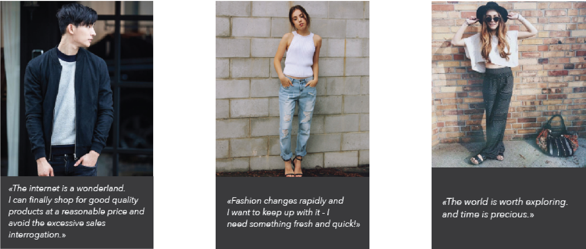

This project aims to reconstruct our perception of E-Commerce sites. Targeted towards teenagers, this reconstructed e-commerce site “Haya” aims to satisfy one’s craving for adventure and comfort by providing its users with the option to personalize their online-shopping experience through different categories of “adventures”. The project’s process included requirements of website design and developmen. Prior to the design cycle, I was assigned to investigate the industry through surveys, card-sorting, interviews and competitive analysis. This knowledge was able to construct possible user personas, stories and flows. Into the design cycle, I designed Haya from wireframes to typeface selection, etc. Essentially reaching the point of development of the live prototype of the application using HTML, CSS and JavaScript.
85%
of consumers prefer to shop in-stores instead of online shopping. But Teenagers are known to shop in-stores as likely as online. Thus the decision to target teens.
02 | Competitive Analysis & Personas
Understanding the market is essential for a new platform, especially with features that are similar to others. As an E-commerce website, Haya’s competitors included applications or brands like Zalando, Zara, Dolls Kills, and Urban Outfitters. The competitive analysis deduced that users value:
A responsive design that betters accessibility across various devices and systems,
Interactive and personalization features,
Differentiation,
Trend or News features,

Inspired by ‘AirBnB’s activity search system as well as Topshop’s in-store personalized shopping experience, personalization were constructed by the “Adventure” feature. The personas challenged a specific investigation in the different types of teens, in order to build a personalization feature within the site. With personalization comes comfort; whilst introducing a new contrsuct to the generic build, the feature adds the demanded ‘adventure-like’ sensation. The chosen themes or “Adventures” are: The Climb, Concrete Jungle, and Ocean Bliss. After many interview sessions, it is noted that the targeted users of teenagers are excited by a sense of adventure and fear to miss out on trendy experiences. This perspective led to the name “Haya” which in Hebrew and Arabic translates to Alive and/or Life, which captures the experience offered by the site. The name further foreshadows the site’s lifelike experience through a personalization feature that gives users the option to shop within their choice of “life Adventure”. Once an adventure is selected, the user is redirected towards a specific page that features trends and recommended styles of the selected theme - continuing the key of personalization. Additional differentiation feature lies within the site’s “trends” page that offers users to browse through trending outfits and offers them a chance to mimic the photographed outfit.
of Millennials research and look for fashion inspirations online before shopping.
04 | Branding & Wireframes
Creating Haya’s wireframes helps visualizes the final prototype. This includes consideration of the layout and its usability- its flow, therefore requires understanding proportions and positioning. Though navigation testing of these wireframes proved successability, I found flaws after additional research and discussion. Directed by my mentor to an article on ‘Quick Views’ by Baymard Institute, I learnt that the ‘Quick Views’ feature actually seems forceful, adds distraction, minimizes visibility and contradicts successful proportions. After some discussion, we resulted in the solution of presenting fewer images per row whilst enlarging image size. Thus the cancellation of the ‘Quick Views' feature.
Another major change was made through implementing additional pages in order to solve a sense of disconnect between the Home page and Landing page. The original wireframe set-up failed to enhance Haya’s centralized idea of adventure and the emotional experience of the idea, as the Home page is set in a generic e-commerce block system. This underwhelming feature was then solved by adding personalized Home pages according to users’ selected choice of adventure and theme. Personalization includes distinct presentations of trends news and clothing, color and decorative images differentiation, etc. It is further produced and improved in Haya’s developed Mock-Up.
05 | Mobile Design
Creating a responsive design for 'Haya' was quite challenging due to its stacking and “open enclosures”, which is most evident in its differentiation pages like the series of Home pages. The challenge here is to transform collage-like formats into a smaller dimension without minimizing visibility whilst still maintaining its voice or theme. After browsing through Landbook and noting how others have resolved such structure adaptation. Some examples decided to keep the overlapping effect however on a smaller scale, however this seemed overcrowding and weakens visibility. In Haya’s case, it is decided that the site shall respond into a mobile layout by cancelling the overlapping format once set into a smaller dimension. Similar to the ‘Quick Views’ feature, instead of forcefully overpacking a single region in a smaller Mobile dimension, the set is elongated and a scroll feature resolves the situation.
As my first coding project, Haya was a great experience and eventually taught me the basic frameworks behind HTML, CSS and Javascript. It is refreshing to view the complexity behind the simplicity of the final website. The completion of Haya required multiple trials and stages of improvements, as it featured animations, various typefaces, buttons, images and a custom color scheme to follow. Every single detail in the coding must be written well and without misspellings and misplacements. The desktop dashboard were constructed through a series of gridding planning. This was later found to be an essential foundation process, and gives the result of a properly proportionate layout. ‘Skeleton’ was a helpful source for this. The project has also challenged my research and risk-taking abilities, as its construction was only achieved as soon as I start to broaden my sources of information. Haya contains many special features ideas, which were only achieved after inspecting existing samples then improving and integrate it into Haya’s specifications. Since one of the main problem or requested feature is the ability for the platform to be accessible from a variety of devices in order to increase effectiveness; A responsive design was also discussed and planned within the project. However the construction of a responsive design only reached the level mobile-format wireframing. Since Haya’s desktop layout is unique and almost unbordered, adjusting the design into a mobile was quite a challenge. Our solution to this is to create an entirely new layout/design for mobile. Though this process urges additional time, the successful outcome of a comfortable usability compensates for the work behind it.